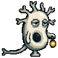
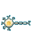
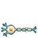
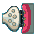
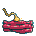
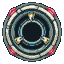
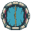

KEEPER 96px03 Nerve Forest — scan silhouette test v2
Concept test only. Flat silhouettes, not final art. Iteration 2: the cell is a star-crowned teardrop with a curled axon; myelin is a continuous capsule with a pinched node; pathway is a beaded chain with a terminal fork.
1. In-room placement at 1×

NEURON
MYELIN
PATHWAY
Neuron: star-crowned teardrop soma + curled axon + fork
Myelin: continuous capsule + pinched node
Pathway: three-bead chain + terminal fork

PAD-D 64px
PAD-T 64px
SYNAPSE 36px
MUSCLE 36px2. Proposed shapes at 8×
Neuron
NERV-01#1 · structure / direction
Star-crowned teardrop, short curled axon, terminal fork. No myelin beads, no long horizontal tail.
PROPOSED
KEEPER
Myelin
NERV-01#3 · sheath / nodes / speed
Continuous capsule with a narrow pinched node. No cell body, no dendrites, no pulse, no terminal.
PROPOSED

RECEPTOR
Pathway
NERV-01#6 · all-or-none / one-way
Three-bead diagonal chain with a terminal fork. No soma, no dendrites, no arrow.
PROPOSED
PAD-T
3. All three at 1×, side by side
on the room background
against the current pads
accepted scans
v2 tries to fix the v1 failure: the cell now has a star crown and a visible curled axon; myelin is one capsule with a pinched node instead of two eggs; pathway keeps three beads but adds a continuous cable and a larger terminal fork. The real test is still the 1× row: if the capsule and chain merge, the concept needs one more shape change before any Nano Banana pass.